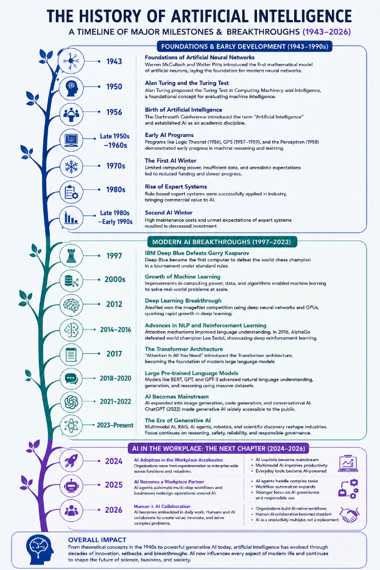

Artifact Information
Title: AI and Machine Learning Timeline
Purpose: To present the major milestones in the history of artificial intelligence and machine learning through a visual timeline.
Audience: Technology professionals, recruiters, students, and anyone interested in learning about the evolution of AI.
This artifact was created as part of my graduate coursework in Artificial Intelligence. It presents major milestones in the history and development of artificial intelligence and machine learning, from the early foundations of AI to modern generative AI technologies. The timeline demonstrates my ability to research technical topics, organize information clearly, and communicate complex concepts to different audiences.
This artifact was created as part of my graduate coursework in artificial intelligence. It presents major milestones in the history and development of artificial intelligence and machine learning.
The timeline begins with the early foundations of AI and continues through important developments such as expert systems, machine learning, deep learning, and modern generative AI.
Intended Audience
This artifact is intended for students, technology professionals, recruiters, and others who are interested in understanding how artificial intelligence has developed over time.
AI and Machine Learning Timeline

Skills Demonstrated
- Artificial intelligence research
- Research and analysis
- Technical writing
- Information organization
- Critical thinking
- Professional communication
Reflection
Creating this timeline helped me better understand how artificial intelligence has developed over several decades. I learned that modern AI technologies are built on many years of research, experimentation, and technological advancement.
This artifact also helped me improve my ability to research a technical topic and organize important information into a clear visual format. Presenting the information as a timeline makes it easier for both technical and non-technical audiences to understand the major developments in artificial intelligence.